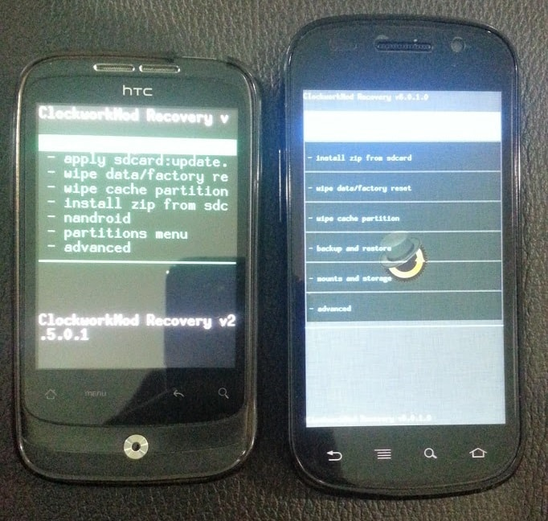

Last modified: Wed Mar 07 2018 05:02:09 GMT+0800 (Malay Peninsula Standard Time)
Android Smartphone and Development
How I Got Started
People know that I love Android. Instead, how I got started with Android was pretty interesting. When I was young, most of my classmates started playing games when they have access to computers. I never deny that I was part of the group, but I only happened when I was 12-15 years old. The only three games that I played was RuneScape, Test Drive Unlimited, and Drift City. Well, no one showed me the proper way of using a computer, the only way that I knew was to use it for game? However, things started to change when I received my first smartphone in my life - HTC Wildfire
It was a low end smartphone at the time. It came with limited storage. I started to tweak it by "rooting" it. In the other words, I began looking ways on the internet on what I can do to get more speed, storage, and turn it into a better devices. I had data plan at the time, it allowed me to look up internet instantly and got the answer I need.
In about a year, I upgraded to Nexus S.
My old phone was passed down to my parents to use it as a business phone. Nexus S was a great phone as it was developed by Google and Samsung. Since it was running stock Android, there was a lot of open source projects on the internet. With that advantages, I picked up skills and knowledge.
Since then, all the phones that I owned will be rooted.

On the last year of high school (2012), I switch to Samsung Galaxy Note 2.
I tried not to mess up as much as before since I was a bit bored of what I was doing before. However, I started realizing that when you moved away from stock Android Devices, you will get different experiences. Then, I moved to USA for my college. Immediately, I realized that my phone was unable to connect to the LTE radio band. Then, I started to learn more about it and got another phone - LG G2. My Galaxy Note 2 was then given to my dad. That was his first smartphone. Many of his friends got the same phone and they learnt together.
I usually don't stick with one brand as I would like to try out more devices and get more from it. LG G2 was one of the phone with the largest screen to body ratio (screen is as big as phone size). Also, they were the first Android smartphone which allowed you to have manual focus option. Well, I fall in love with it, especially the size and the camera. The next year, I switched to LG G4. My LG G2 was then given to my mom. Since she always drops her phone, she refused to use a brand new phone.
Again, I was super impressed with the picture quality. It was one of the first few phones that had 8 Megapixel front camera. The picture quality was great! I enjoyed the laser auto focus and the ambient sensor that detect the surrounding color temperature. The picture quality was prefect almost every time. People began to use my phone for photo shooting when we went out together.
My contribution to Android Community
In 2011, I saw there was Chinese Android application, 360 Launcher (not available in Google Play Store since of August 2016, according to WaybackMachine), that may have opportunity to expand it into the global market.

I spent a few days to translate the application to English language and published it into XDA-Developers forum - a mobile software development community of over 6.6 million members worldwide. The application quickly became one of the hottest Android Application launcher available in the forum at that time. Remember, Android 2.3.3 (Gingerbread) was the latest operating system at that time. There was not much Android Application Developer, good Android launcher, and free Application. Since this launcher had a lot of customization options and add on features, people love it!

Not long later, I was then contacted by one of the person who was in charged of the project from the Qihoo 360. They were impressed that there was a high school student that helped them on promoting and translating the Android Application. Then, we worked together and officially released the English version of the launcher to the public. Due to the popularity, people started to contact me and asking for help and guidance on how to translate them into the language that they speak. Interestingly, in a few months, the Android launcher had been translated to more languages: Spanish, Hungarian, Italian, Vietnamese, Czech, Turkish, French, and Russian. Officially, the application support Chinese, English, French, Russian, and Spanish (shown in the screenshot in Play Store). The application itself gained more than 5-10 millions install from Google Play Store (does not include any third party website) in less than 5 years. Of course, I did not stop there. I started to translate more application created by the company. They were very successful too. Eventually, I stopped doing it after I graduated from high school.